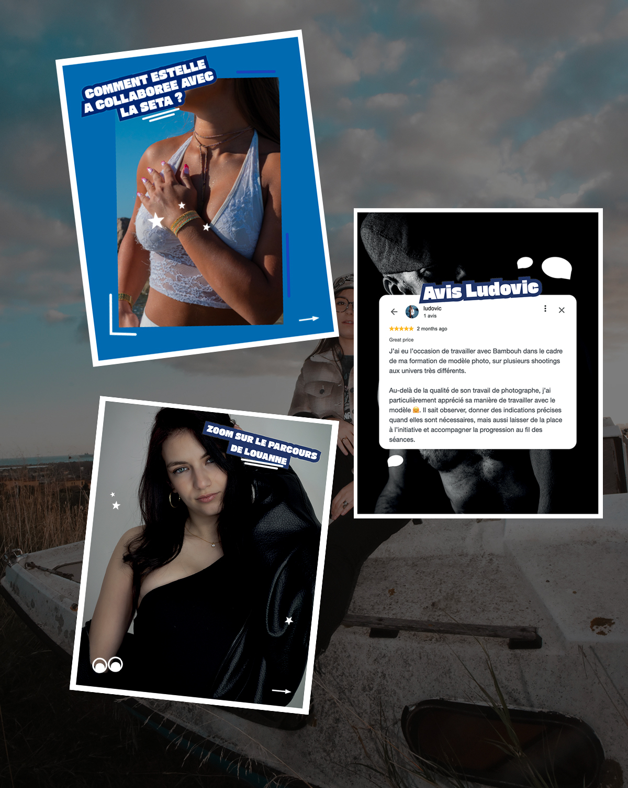
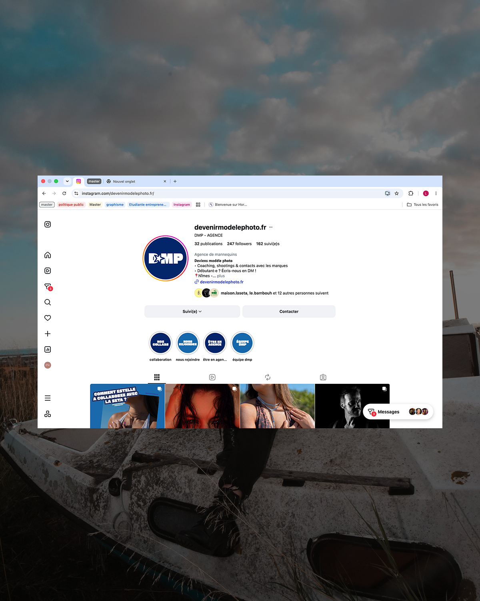

Community management · Agence photo
Agence photo
DMP
Comment donner une identité reconnaissable à une agence photo et la faire vivre sur les réseaux ? Pour DMP, j’associe création graphique, stratégie de communication et réalisation de contenus, jusque sur le terrain des shootings.
Une même direction, du logo aux publications et des stories aux vidéos.

Mon rôle
Une identité
qui se prolonge.
Mon travail pour DMP commence par la création de l’identité visuelle de l’agence et se poursuit dans sa communication sur les réseaux sociaux.
Je mets en place une stratégie pour relier les prises de parole de l’agence et donner une cohérence aux contenus. L’objectif : faire reconnaître DMP tout en mettant en valeur son activité.
La création graphique
Des publications,
un même univers.
Je réalise des publications en accord avec l’identité visuelle de l’agence. Couleurs, typographies et composition donnent des repères communs aux différents contenus.
Cette cohérence permet de varier les sujets tout en conservant une présence reconnaissable : présenter un parcours, partager un témoignage ou mettre en avant une collaboration.
Chaque publication doit servir son message tout en trouvant sa place dans l’univers de DMP.

L’animation des réseaux
Faire vivre
la communication.
Une stratégie pour guider les contenus
La stratégie réseaux sociaux donne une direction aux publications et à leur organisation. Elle relie les messages de l’agence aux formats utilisés pour les partager.
Des stories actualisées
J’actualise les stories pour accompagner la vie de l’agence et prolonger sa communication au-delà des publications.
Une présence sur TikTok
Je participe à l’animation du TikTok de l’agence, en adaptant les contenus au format vidéo tout en gardant un lien avec son identité.

Sur le terrain
Des shootings
aux vidéos.
Je me déplace lors des shootings pour réaliser des vidéos destinées à la communication de l’agence. Cette présence sur le terrain me permet de créer des contenus au plus près de son activité.
Le projet réunit ainsi plusieurs dimensions de ma pratique : construire une identité, organiser une communication et produire les images qui la font vivre.